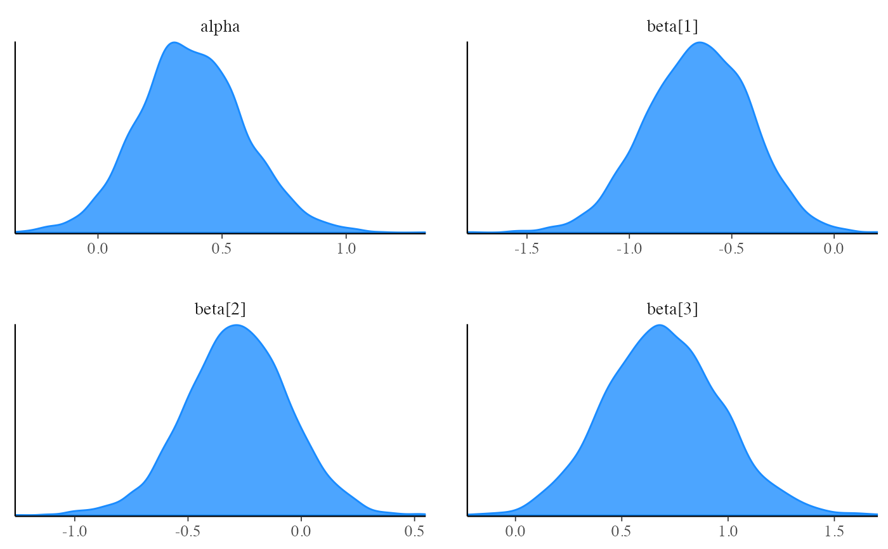

Extract posterior draws after MCMC or approximate posterior draws after variational approximation using formats provided by the posterior package.
The variables include the parameters, transformed parameters, and
generated quantities from the Stan program as well as lp__, the total
log probability (target) accumulated in the model block.
Usage
$draws(variables = NULL, inc_warmup = FALSE, ...)
Arguments
variables: (character vector) The variables (parameters and generated quantities) to read in. IfNULL(the default) then the draws of all variables are included.inc_warmup: (logical) For MCMC only, should warmup draws be included? Defaults toFALSE....: Arguments passed on toposterior::as_draws_array().
Value
For MCMC, a 3-D
draws_arrayobject (iteration x chain x variable).For standalone generated quantities, a 3-D
draws_arrayobject (iteration x chain x variable).For variational inference, a 2-D
draws_matrixobject (draw x variable). An additional variablelp_approx__is also included, which is the log density of the variational approximation to the posterior evaluated at each of the draws.For optimization, a 1-row
draws_matrixwith one column per variable. These are not actually draws, just point estimates stored in thedraws_matrixformat.
Examples
# \dontrun{ library(posterior) library(bayesplot) color_scheme_set("brightblue") # logistic regression with intercept alpha and coefficients beta fit <- cmdstanr_example("logistic")#>#> [1] 1000 4 5str(draws)#> 'draws_array' num [1:1000, 1:4, 1:5] -65 -65.1 -65.3 -65.4 -68.7 ... #> - attr(*, "dimnames")=List of 3 #> ..$ iteration: chr [1:1000] "1" "2" "3" "4" ... #> ..$ chain : chr [1:4] "1" "2" "3" "4" #> ..$ variable : chr [1:5] "lp__" "alpha" "beta[1]" "beta[2]" ...# can easily convert to other formats (data frame, matrix, list) as_draws_df(draws) # see also as_draws_matrix, as_draws_list#> # A draws_df: 1000 iterations, 4 chains, and 5 variables #> lp__ alpha beta[1] beta[2] beta[3] #> 1 -65 0.616 -0.66 -0.3815 0.5227 #> 2 -65 0.532 -0.61 -0.3777 0.3704 #> 3 -65 0.666 -0.52 -0.1367 0.5360 #> 4 -65 0.418 -0.42 0.0059 0.7303 #> 5 -69 0.084 -0.37 -0.2434 -0.0093 #> 6 -64 0.284 -0.53 -0.1376 0.5247 #> 7 -68 0.740 -0.24 -0.0275 0.9066 #> 8 -66 0.749 -0.46 -0.0666 0.5645 #> 9 -66 0.559 -1.05 -0.4111 0.8094 #> 10 -65 0.189 -0.94 -0.3172 0.7602 #> # ... with 3990 more draws #> # ... hidden meta-columns {'.chain', '.iteration', '.draw'}# can select specific parameters fit$draws("alpha")#> # A draws_array: 1000 iterations, 4 chains, and 1 variables #> , , variable = alpha #> #> chain #> iteration 1 2 3 4 #> 1 0.616 0.59 0.67 -0.037 #> 2 0.532 0.51 0.60 0.517 #> 3 0.666 0.43 0.66 0.387 #> 4 0.418 0.57 0.83 0.645 #> 5 0.084 0.58 0.37 0.420 #> #> # ... with 995 more iterationsfit$draws("beta") # selects entire vector beta#> # A draws_array: 1000 iterations, 4 chains, and 3 variables #> , , variable = beta[1] #> #> chain #> iteration 1 2 3 4 #> 1 -0.66 -0.92 -0.26 -0.71 #> 2 -0.61 -0.91 -0.62 -0.58 #> 3 -0.52 -0.85 -0.59 -0.80 #> 4 -0.42 -0.55 -0.35 -0.44 #> 5 -0.37 -0.73 -0.67 -0.66 #> #> , , variable = beta[2] #> #> chain #> iteration 1 2 3 4 #> 1 -0.3815 -0.724 -0.124 -0.13 #> 2 -0.3777 -0.339 0.026 -0.56 #> 3 -0.1367 -0.600 0.035 -0.26 #> 4 0.0059 0.064 0.074 -0.40 #> 5 -0.2434 0.053 -0.578 -0.32 #> #> , , variable = beta[3] #> #> chain #> iteration 1 2 3 4 #> 1 0.5227 0.70 0.67 1.17 #> 2 0.3704 0.84 0.66 0.38 #> 3 0.5360 0.94 0.58 0.68 #> 4 0.7303 0.54 0.11 0.72 #> 5 -0.0093 1.09 0.52 0.75 #> #> # ... with 995 more iterations#> # A draws_array: 1000 iterations, 4 chains, and 2 variables #> , , variable = alpha #> #> chain #> iteration 1 2 3 4 #> 1 0.616 0.59 0.67 -0.037 #> 2 0.532 0.51 0.60 0.517 #> 3 0.666 0.43 0.66 0.387 #> 4 0.418 0.57 0.83 0.645 #> 5 0.084 0.58 0.37 0.420 #> #> , , variable = beta[2] #> #> chain #> iteration 1 2 3 4 #> 1 -0.3815 -0.724 -0.124 -0.13 #> 2 -0.3777 -0.339 0.026 -0.56 #> 3 -0.1367 -0.600 0.035 -0.26 #> 4 0.0059 0.064 0.074 -0.40 #> 5 -0.2434 0.053 -0.578 -0.32 #> #> # ... with 995 more iterations# }